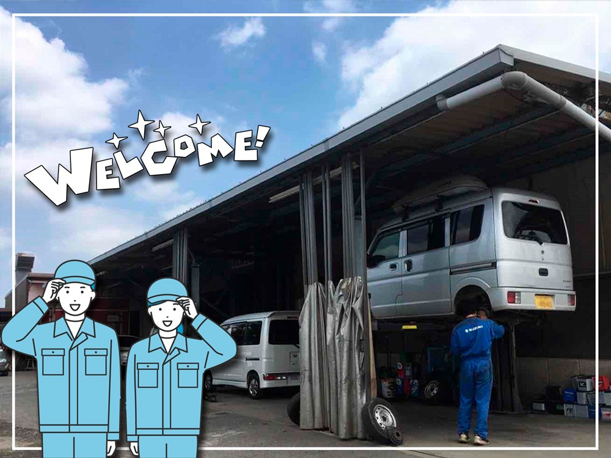

About us

先代から大切に守り継がれてきたアットホームな温かさが、オートワークスクボタの自慢です。長年、地元の皆様に愛されながら、たくさんのお客様と密な信頼関係を築き上げてまいりました。
スズキオート柏・柏の葉店で働く4人は、全員が未経験からのスタート。だから未経験でも大丈夫。私たちがしっかりサポートします。
Why Kubota

01
国内外の乗用車、トラック、特殊車両まで対応。頼れる先輩のもとで、幅広い車種の整備技術が身につきます。

02
見習いからスタートでき、国家資格の取得費用は全額会社負担。勤務時間内に講習へ通え、その間も給与を支給します。

03
週休2日制、夏季・年末年始は1週間以上の連休。賞与年2回、昼食の弁当代半額負担など福利厚生も充実。
Workplace
FACTORY
柏市花野井1708-4｜TX「柏たなか駅」より車10分
募集：自動車整備士／事務スタッフ
SHOP
柏市若柴340｜TX「柏の葉キャンパス駅」より徒歩10分
募集：自動車整備士／総合事務スタッフ／店長候補



One day
※ここはサンプルです。実際には御社スタッフの1日の流れに差し替えます
入庫予定と分担を確認。
先輩と一緒に入庫車を点検。
弁当代は会社が半額負担。
修理や部品の取り付け。
ドリンクでひと息。
仕上げてお客様のもとへ。
片付けをして終了。
Voice
※ここはサンプルです。実際に働く先輩からのメッセージ・写真に差し替えます

資格も経験もゼロからのスタートでした。先輩が横で一つずつ教えてくれるので、安心して覚えられます。

毎日ちがう車に触れられるのが面白い。長い連休もあるので、趣味の時間もしっかり楽しめています。
車に詳しくなくても大丈夫でした。スタッフもお客様もやさしい方ばかりで、本当に働きやすい職場です。

ご成約・納車の様子や入荷したクルマ、お店からのお知らせ、スタッフの日常などを投稿中。どんな人が、どんな空気の中で働いているのか。応募の前にぜひご覧ください。
@suzukiautokashiwa
Instagramを見るFAQ
※ここはサンプルです。実際には御社の「よくある質問」が入ります
はい。整備士は見習いからスタートでき、資格取得費用は会社が全額負担します。事務も車の知識は不要です。
本社工場と柏の葉店のどちらでも採用しています。面接時にご希望をお聞かせください。
お電話またはフォームでご応募 → 面接（1回を予定）→ 内定。職場見学のご相談も可能です。
週休2日制に加え、GW・夏季・年末年始の連休があります。夏季・年末年始は各1週間以上が通例です。
経験年数・資格・能力を考慮し、面接でしっかり話し合ったうえで決定します。

Recruiter
応募前のご質問や職場見学も歓迎です。ご連絡いただいたら、私が責任を持ってご対応します。
採用担当：○○ ○○
※ここはサンプルです。実際の採用担当者の写真・お名前・メッセージに差し替えます
問い合わせるJobs
| 仕事内容 | 自動車の整備・修理・点検・車検、部品取り付け、引き取り・納車、洗車など。見習いスタート可。 |
|---|---|
| 給与 | 月給270,000円～420,000円＋各種手当（2級資格手当20,000円含む） 見習いの方：月給210,000円～250,000円＋各種手当 別途資格手当：自動車検査員10,000円／損害保険募集人5,000円 |
| 応募資格 | 普通自動車免許（AT限定不可）／2級整備士資格（見習いの方は不問）／学歴・性別不問 |
| 勤務地 | オートワークスクボタ（本社工場）またはスズキオート柏・柏の葉店 |
| 休日 | 本社工場：週休2日制（日曜＋第2・第4土曜）、祝日 柏の葉店：週休2日制（月曜＋第2・第4日曜） |
| 仕事内容 | 来店受付・電話対応、パソコンでのデータ入力・書類作成、運輸支局への書類提出、お車の引き取り・納車など。 |
|---|---|
| 給与 | 月給215,000円～320,000円＋各種手当 |
| 応募資格 | 普通自動車免許（AT限定可）／未経験OK・学歴不問／車の知識は不要です |
| 勤務地 | オートワークスクボタ（本社工場）またはスズキオート柏・柏の葉店 |
| 休日 | 本社工場：完全週休2日制（土・日）、祝日 柏の葉店：週休2日制（月曜＋第2・第4日曜） |
| 仕事内容 | 新車・中古車販売、車検・点検受付、保険業務などの接客業務と、店舗の売上管理、スタッフの管理・育成。 |
|---|---|
| 給与 | 月給350,000円～500,000円＋各種手当 販売実績に応じた販売手当あり（ノルマなし） |
| 応募資格 | 自動車業界の経験者（職種不問・ブランク可）／普通自動車免許（AT限定可）／基本的なPCスキル |
| 勤務地 | スズキオート柏・柏の葉店 |
| 休日 | 週休2日制（月曜＋第2・第4日曜） |
| 共通：雇用形態 | 正社員（試用期間6ヶ月・同条件） |
|---|---|
| 共通：勤務時間 | 8:45～18:00（休憩90分） |
| 共通：休暇 | GW・夏季・年末年始（会社カレンダーによる）、有給休暇 |
| 共通：待遇 | 昇給年1回、賞与年2回、社会保険完備、退職金共済、時間外・役職・資格手当、制服貸与、交通費規定内支給（マイカー通勤可・無料駐車場あり）、国家資格取得費用の全額負担、昼食手当、健康診断、予防接種・人間ドック補助、社割制度 ほか |